Change analysis for Dominican Republic for PRIMAP-hist v2.8_final
compared to v2.7_final
This changelog is published under the creative commons non-commercial
share alike license. For more information see creativecommons.org.
Overview over
emissions by sector and gas
The following figures show the aggregate national total emissions
excluding LULUCF AR6GWP100 for the country reported priority scenario.
The dotted lines show the v2.7_final data.
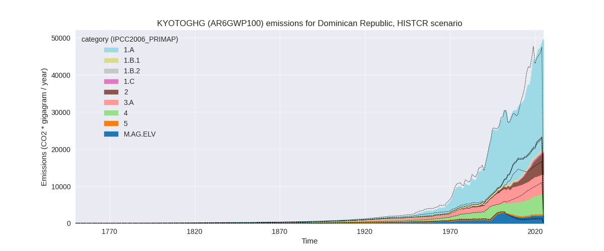
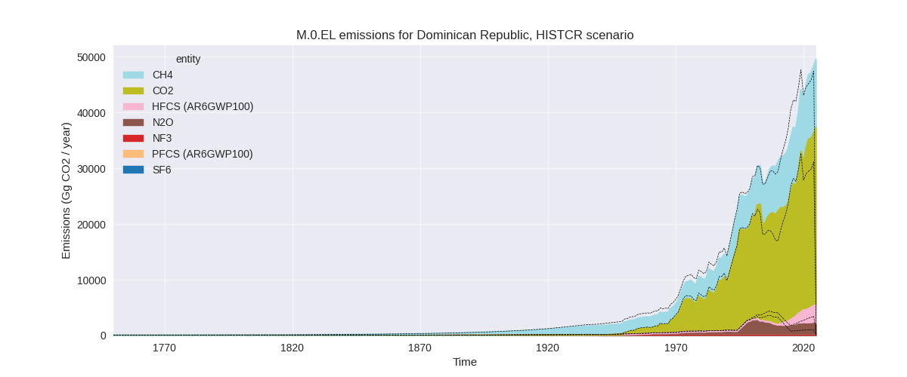
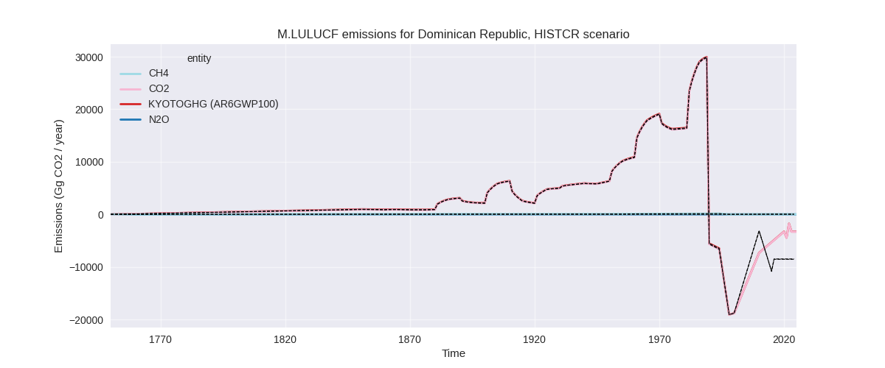
The following figures show the aggregate national total emissions
excluding LULUCF AR6GWP100 for the third party priority scenario. The
dotted lines show the v2.7_final data.
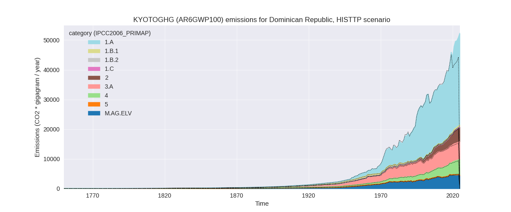
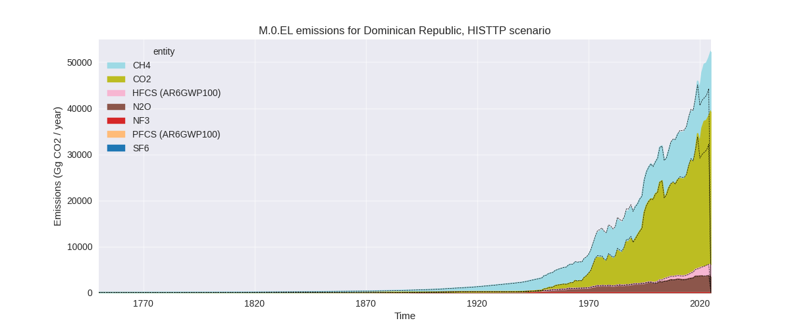
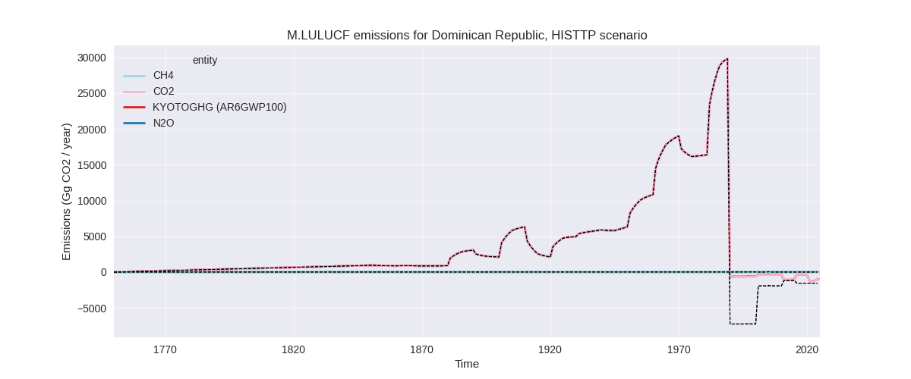
Used country reported data
The changelog with this information is available upon request for
non-commercial customers. Paying commercial customers will be provided
with the information.
Overview over changes
In the country reported priority scenario we have the following
changes for aggregate Kyoto GHG and national total emissions excluding
LULUCF (M.0.EL):
- Emissions in 2024 have changed by 1.7%% (820.94 Gg CO2 / year)
- Emissions in 1990-2024 have changed by -2.6%% (-846.43 Gg CO2 / year)
In the third party priority scenario we have the following changes
for aggregate Kyoto GHG and national total emissions excluding LULUCF
(M.0.EL):
- Emissions in 2024 have changed by 14.9%% (6589.07 Gg CO2 / year)
- Emissions in 1990-2024 have changed by 2.4%% (777.43 Gg CO2 / year)
Most
important changes per scenario and time frame
In the country reported priority scenario the
following sector-gas combinations have the highest absolute impact on
national total KyotoGHG (AR6GWP100) emissions in 2024
(up to 10 with either at least 0.2% impact on total emissions or at
least 20% change):
- 1: 1.A, CO2 with 4613.19 Gg CO2 / year (19.6%, 9.7%)
- 2: 4, CH4 with -4247.76 Gg CO2 / year (-44.5%, -9.0%)
- 3: M.AG.ELV, N2O with 1492.61 Gg CO2 / year (1176.2%, 3.1%)
- 4: 2, CO2 with -1014.62 Gg CO2 / year (-27.5%, -2.1%)
- 5: 2, HFCS (AR6GWP100) with 796.06 Gg CO2 / year (32.9%, 1.7%)
- 6: 1.B.2, CH4 with 597.13 Gg CO2 / year (849.4%, 1.3%)
- 7: M.AG.ELV, CH4 with -357.11 Gg CO2 / year (-39.5%, -0.8%)
- 8: 3.A, N2O with -267.18 Gg CO2 / year (-57.7%, -0.6%)
- 9: 5, N2O with -238.97 Gg CO2 / year (-100.0%, -0.5%)
- 10: 1.B.2, CO2 with -234.14 Gg CO2 / year (-95.7%, -0.5%)
In the country reported priority scenario the
following sector-gas combinations have the highest absolute impact on
national total KyotoGHG (AR6GWP100) emissions in
1990-2024 (up to 10 with either at least 0.1% impact on
total emissions or at least 10% change):
- 1: 1.A, CO2 with 2123.32 Gg CO2 / year (12.7%, 6.6%)
- 2: 4, CH4 with -1733.90 Gg CO2 / year (-34.2%, -5.4%)
- 3: M.AG.ELV, N2O with 642.79 Gg CO2 / year (74.6%, 2.0%)
- 4: 3.A, N2O with -474.20 Gg CO2 / year (-83.3%, -1.5%)
- 5: 2, CO2 with -440.35 Gg CO2 / year (-24.1%, -1.4%)
- 6: 3.A, CH4 with -394.69 Gg CO2 / year (-9.5%, -1.2%)
- 7: 1.B.1, CH4 with -207.98 Gg CO2 / year (-77.0%, -0.7%)
- 8: 5, N2O with -196.54 Gg CO2 / year (-100.0%, -0.6%)
- 9: 1.B.2, CH4 with 190.84 Gg CO2 / year (698.2%, 0.6%)
- 10: 1.A, N2O with -141.61 Gg CO2 / year (-48.5%, -0.4%)
In the third party priority scenario the following
sector-gas combinations have the highest absolute impact on national
total KyotoGHG (AR6GWP100) emissions in 2024 (up to 10
with either at least 0.2% impact on total emissions or at least 20%
change):
- 1: 1.A, CO2 with 6150.76 Gg CO2 / year (26.5%, 13.9%)
- 2: 4, CH4 with 507.93 Gg CO2 / year (11.8%, 1.1%)
- 3: M.AG.ELV, N2O with -178.30 Gg CO2 / year (-6.0%, -0.4%)
- 4: M.AG.ELV, CH4 with -130.97 Gg CO2 / year (-8.3%, -0.3%)
- 5: 1.B.1, CH4 with 128.76 Gg CO2 / year (55.7%, 0.3%)
- 6: M.AG.ELV, CO2 with 53.50 Gg CO2 / year (29.2%, 0.1%)
In the third party priority scenario the following
sector-gas combinations have the highest absolute impact on national
total KyotoGHG (AR6GWP100) emissions in 1990-2024 (up
to 10 with either at least 0.1% impact on total emissions or at least
10% change):
- 1: 1.A, CO2 with 711.21 Gg CO2 / year (3.9%, 2.2%)
- 2: 4, CH4 with 63.64 Gg CO2 / year (2.5%, 0.2%)
Notes on data changes
The changelog with this information is available upon request for
non-commercial customers. Paying commercial customers will be provided
with the information.
Changes by sector and gas
For each scenario and time frame the changes are displayed for all
individual sectors and all individual gases. In the sector plot we use
aggregate Kyoto GHGs in AR6GWP100. In the gas plot we usenational total
emissions without LULUCF.
country reported scenario
2024
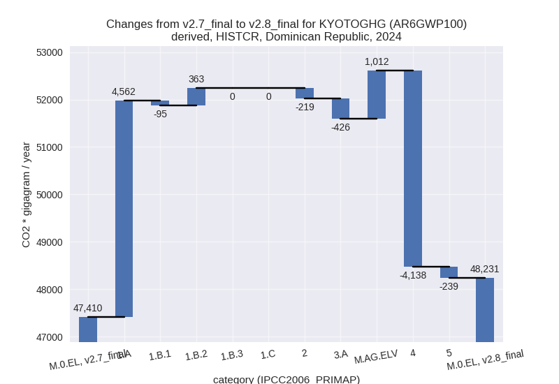
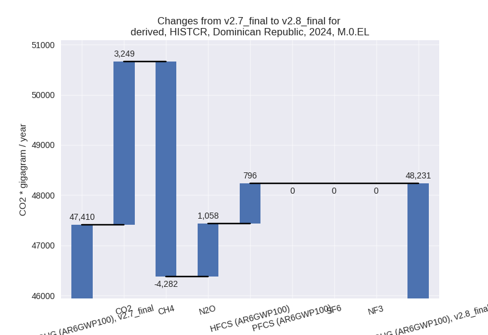
1990-2024
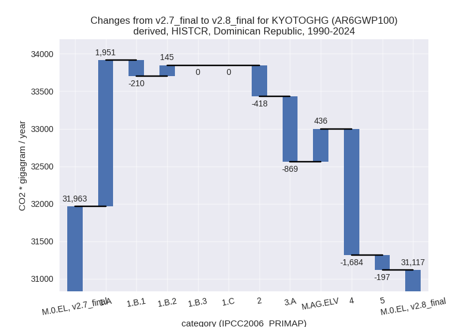
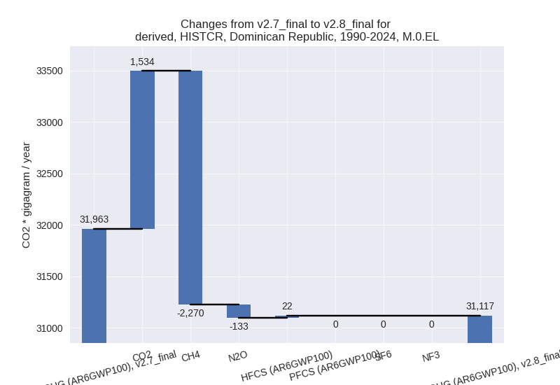
third party scenario
2024
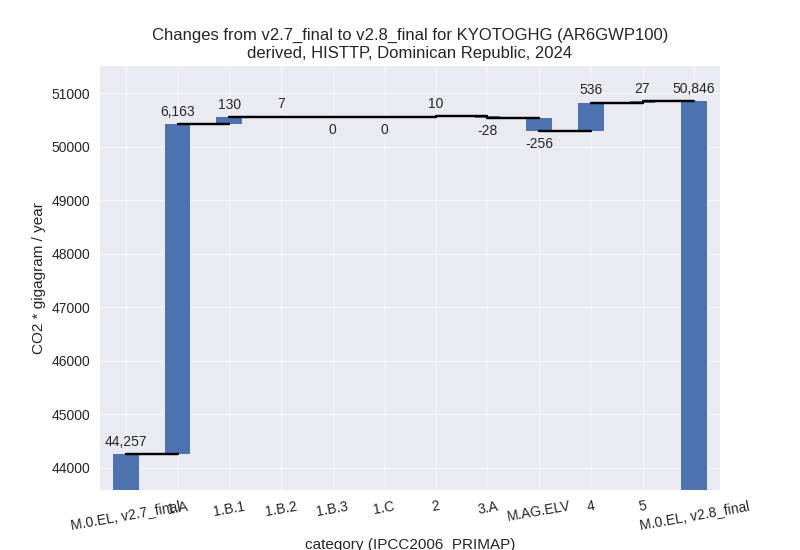
1990-2024
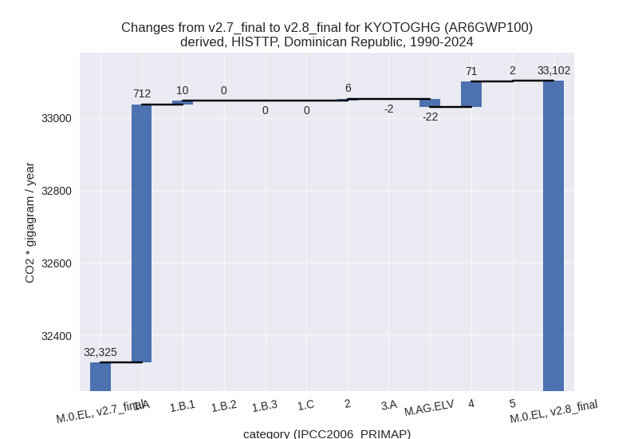
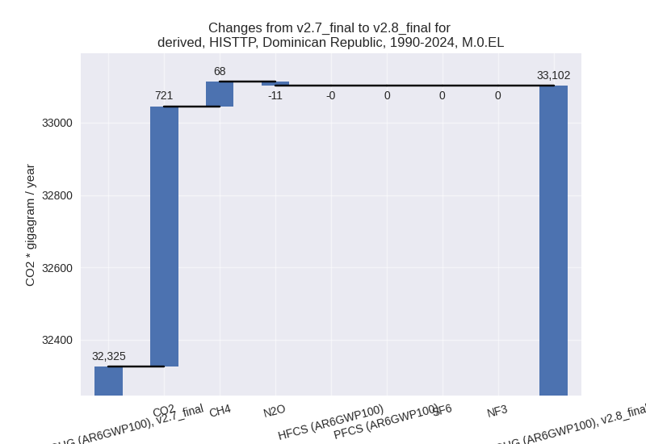
Detailed changes for the
scenarios:
country reported scenario
(HISTCR):
Most important changes
per time frame
For 2024 the following sector-gas combinations have
the highest absolute impact on national total KyotoGHG (AR6GWP100)
emissions in 2024 (up to 20 with either at least 0.2%
impact on total emissions or at least 20% change):
- 1: 1.A, CO2 with 4613.19 Gg CO2 / year (19.6%), 9.7%)
- 2: 4, CH4 with -4247.76 Gg CO2 / year (-44.5%), -9.0%)
- 3: M.AG.ELV, N2O with 1492.61 Gg CO2 / year (1176.2%), 3.1%)
- 4: 2, CO2 with -1014.62 Gg CO2 / year (-27.5%), -2.1%)
- 5: 2, HFCS (AR6GWP100) with 796.06 Gg CO2 / year (32.9%), 1.7%)
- 6: 1.B.2, CH4 with 597.13 Gg CO2 / year (849.4%), 1.3%)
- 7: M.AG.ELV, CH4 with -357.11 Gg CO2 / year (-39.5%), -0.8%)
- 8: 3.A, N2O with -267.18 Gg CO2 / year (-57.7%), -0.6%)
- 9: 5, N2O with -238.97 Gg CO2 / year (-100.0%), -0.5%)
- 10: 1.B.2, CO2 with -234.14 Gg CO2 / year (-95.7%), -0.5%)
- 11: 3.A, CH4 with -158.55 Gg CO2 / year (-3.0%), -0.3%)
- 12: M.AG.ELV, CO2 with -123.93 Gg CO2 / year (-67.7%), -0.3%)
- 13: 4, N2O with 101.84 Gg CO2 / year (23487.8%), 0.2%)
- 14: 1.B.1, CH4 with -94.42 Gg CO2 / year (-40.8%), -0.2%)
- 15: 4, CO2 with 8.24 Gg CO2 / year (1672.0%), 0.0%)
- 16: 1.B.2, N2O with 0.04 Gg CO2 / year (inf%), 0.0%)
- 17: 2, N2O with -0.03 Gg CO2 / year (-99.9%), -0.0%)
For 1990-2024 the following sector-gas combinations
have the highest absolute impact on national total KyotoGHG (AR6GWP100)
emissions in 1990-2024 (up to 20 with either at least
0.1% impact on total emissions or at least 10% change):
- 1: 1.A, CO2 with 2123.32 Gg CO2 / year (12.7%), 6.6%)
- 2: 4, CH4 with -1733.90 Gg CO2 / year (-34.2%), -5.4%)
- 3: M.AG.ELV, N2O with 642.79 Gg CO2 / year (74.6%), 2.0%)
- 4: 3.A, N2O with -474.20 Gg CO2 / year (-83.3%), -1.5%)
- 5: 2, CO2 with -440.35 Gg CO2 / year (-24.1%), -1.4%)
- 6: 3.A, CH4 with -394.69 Gg CO2 / year (-9.5%), -1.2%)
- 7: 1.B.1, CH4 with -207.98 Gg CO2 / year (-77.0%), -0.7%)
- 8: 5, N2O with -196.54 Gg CO2 / year (-100.0%), -0.6%)
- 9: 1.B.2, CH4 with 190.84 Gg CO2 / year (698.2%), 0.6%)
- 10: 1.A, N2O with -141.61 Gg CO2 / year (-48.5%), -0.4%)
- 11: M.AG.ELV, CO2 with -113.59 Gg CO2 / year (-69.0%), -0.4%)
- 12: M.AG.ELV, CH4 with -92.77 Gg CO2 / year (-17.0%), -0.3%)
- 13: 1.B.2, CO2 with -46.00 Gg CO2 / year (-92.1%), -0.1%)
- 14: 4, N2O with 38.46 Gg CO2 / year (66.1%), 0.1%)
- 15: 4, CO2 with 11.09 Gg CO2 / year (3306.9%), 0.0%)
- 16: 1.B.1, N2O with -2.37 Gg CO2 / year (-66.4%), -0.0%)
- 17: 2, N2O with -0.03 Gg CO2 / year (-99.1%), -0.0%)
- 18: 1.B.2, N2O with 0.01 Gg CO2 / year (inf%), 0.0%)
Changes in the main sectors for aggregate KyotoGHG (AR6GWP100)
are
- 1: Total sectoral emissions in 2022 are 28701.44 Gg
CO2 / year which is 61.4% of M.0.EL emissions. 2024 Emissions have
changed by 19.6% (4830.36 Gg CO2 /
year). 1990-2024 Emissions have changed by 10.6% (1885.10 Gg CO2 / year). For 2024
the changes per gas
are:
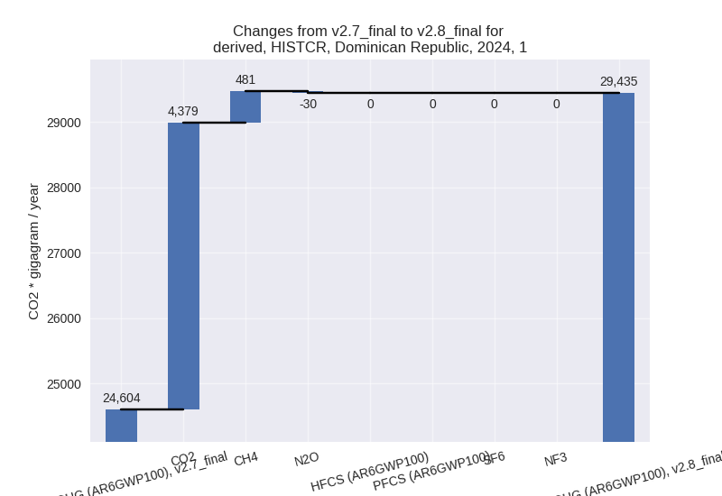
For 1990-2024 the changes per gas
are:
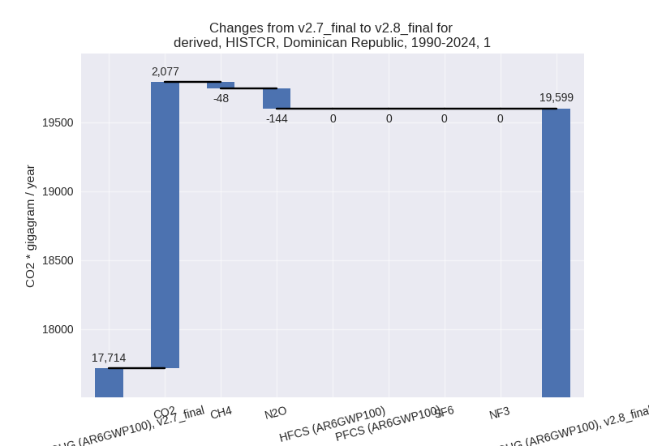
The changes come from the following subsectors:
- 1.A: Total sectoral emissions in 2022 are 28058.97
Gg CO2 / year which is 97.8% of category 1 emissions. 2024 Emissions
have changed by 19.0% (4562.16 Gg
CO2 / year). 1990-2024 Emissions have changed by 11.2% (1950.60 Gg CO2 / year). For 2024
the changes per gas
are:
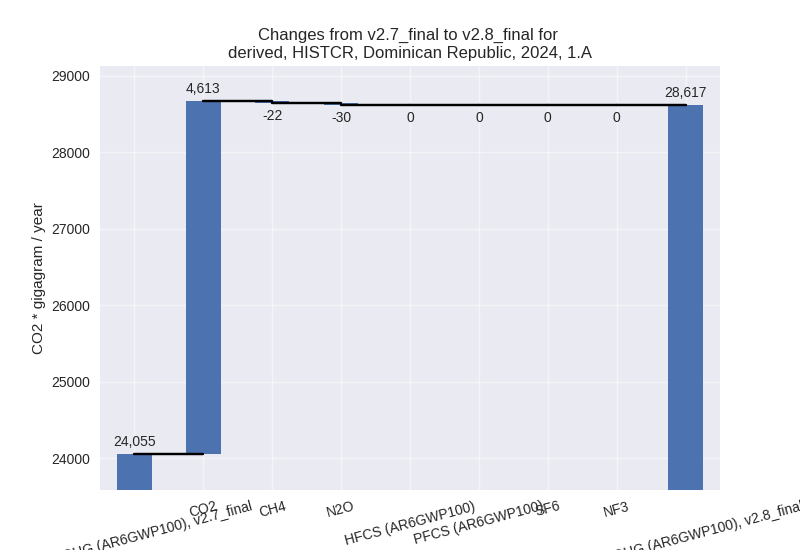
For 1990-2024 the changes per gas
are:
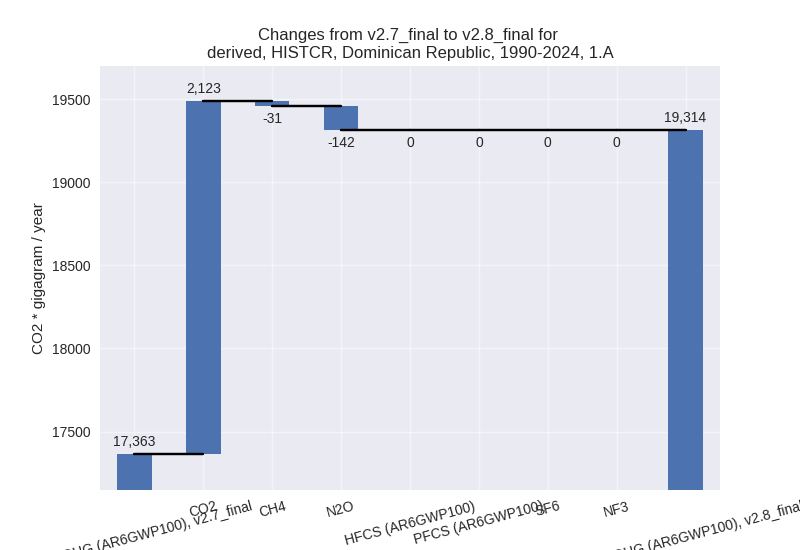
There is no subsector information available in PRIMAP-hist.
- 1.B.1: Total sectoral emissions in 2022 are 139.48
Gg CO2 / year which is 0.5% of category 1 emissions. 2024 Emissions have
changed by -40.5% (-94.82 Gg CO2 /
year). 1990-2024 Emissions have changed by -76.9% (-210.36 Gg CO2 / year). For 2024
the changes per gas
are:
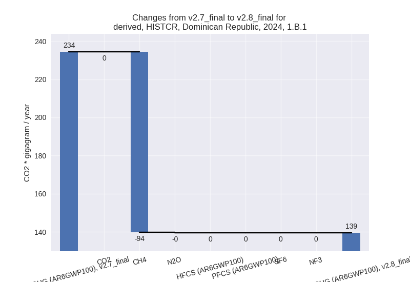
For 1990-2024 the changes per gas
are:
There is no subsector information available in PRIMAP-hist.
- 1.B.2: Total sectoral emissions in 2022 are 502.99
Gg CO2 / year which is 1.8% of category 1 emissions. 2024 Emissions have
changed by 115.3% (363.03 Gg CO2 /
year). 1990-2024 Emissions have changed by 187.5% (144.86 Gg CO2 / year). For 2024
the changes per gas
are:
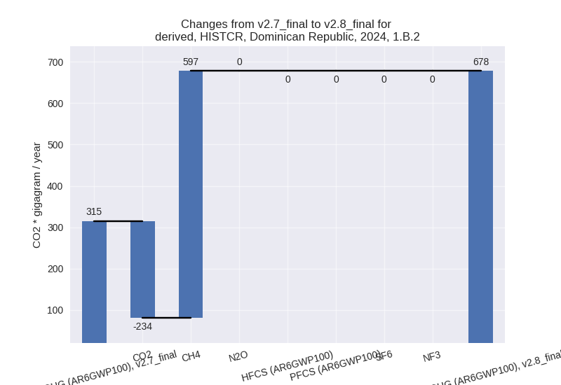
For 1990-2024 the changes per gas
are:
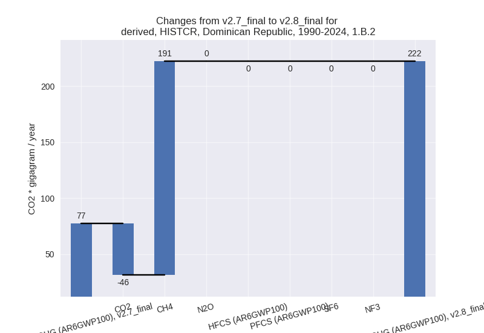
There is no subsector information available in PRIMAP-hist.
- 2: Total sectoral emissions in 2022 are 5483.97 Gg
CO2 / year which is 11.7% of M.0.EL emissions. 2024 Emissions have
changed by -3.6% (-218.60 Gg CO2 /
year). 1990-2024 Emissions have changed by -16.0% (-418.18 Gg CO2 / year). For 2024
the changes per gas
are:
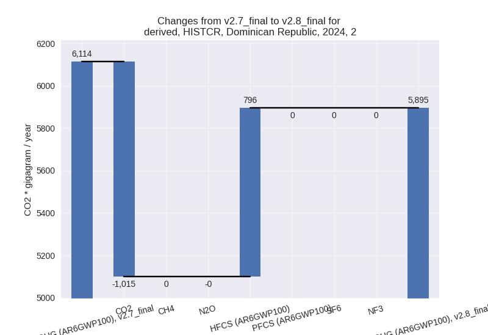
For 1990-2024 the changes per gas
are:
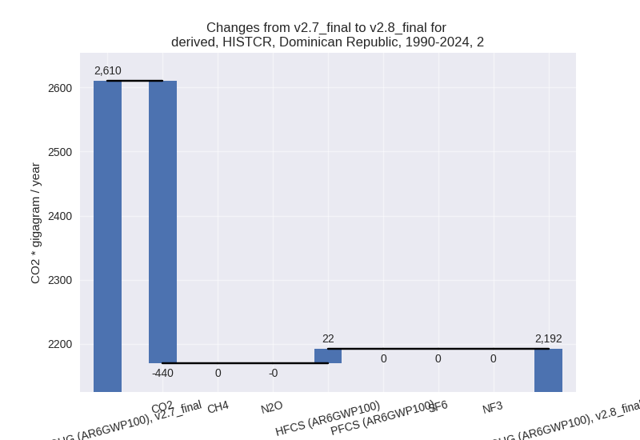
- M.AG: Total sectoral emissions in 2022 are 7405.32
Gg CO2 / year which is 15.8% of M.0.EL emissions. 2024 Emissions have
changed by 8.5% (585.83 Gg CO2 /
year). 1990-2024 Emissions have changed by -6.9% (-432.47 Gg CO2 / year). For 2024
the changes per gas
are:
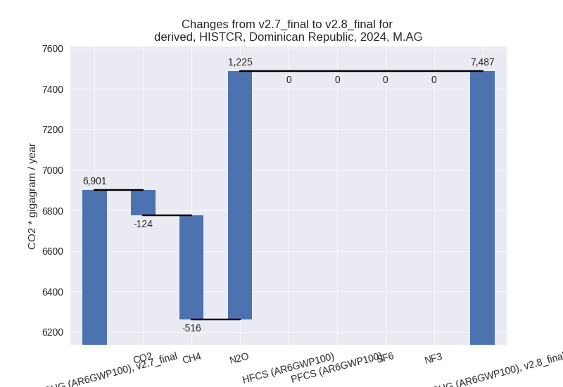
For 1990-2024 the changes per gas
are:
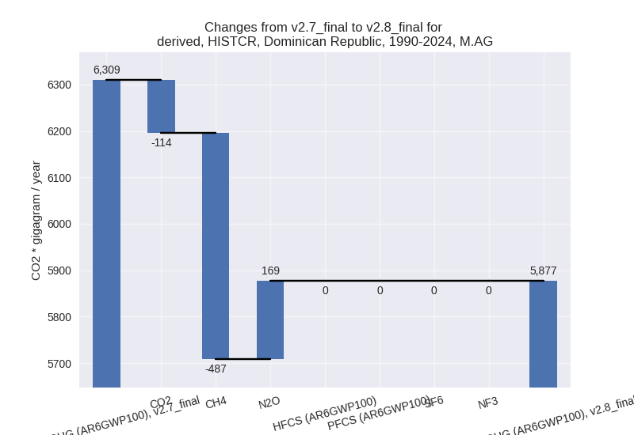
The changes come from the following subsectors:
- 3.A: Total sectoral emissions in 2022 are 5231.30
Gg CO2 / year which is 70.6% of category M.AG emissions. 2024 Emissions
have changed by -7.5% (-425.73 Gg
CO2 / year). 1990-2024 Emissions have changed by -18.3% (-868.89 Gg CO2 / year). For 2024
the changes per gas
are:
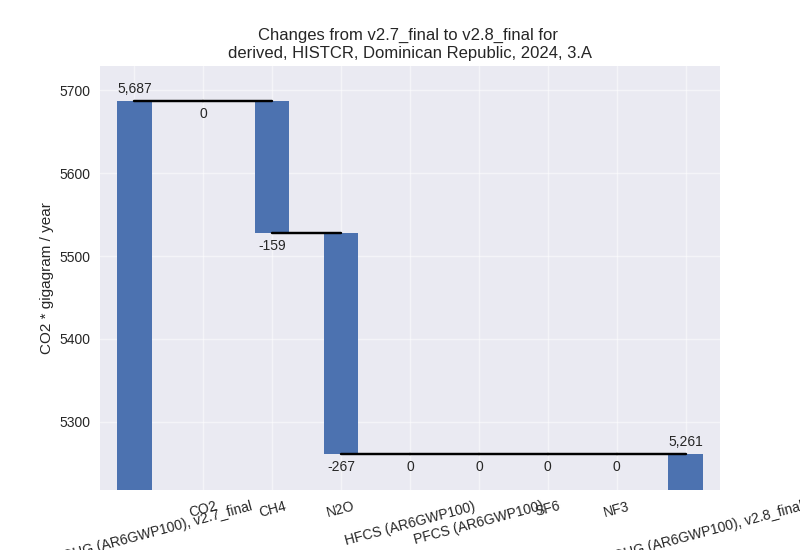
For 1990-2024 the changes per gas
are:
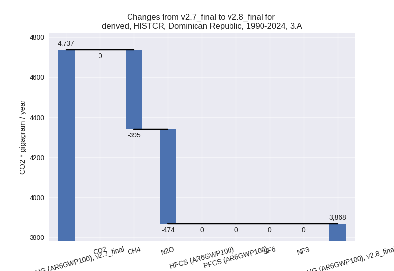
There is no subsector information available in PRIMAP-hist.
- M.AG.ELV: Total sectoral emissions in 2022 are
2174.02 Gg CO2 / year which is 29.4% of category M.AG emissions. 2024
Emissions have changed by 83.3%
(1011.56 Gg CO2 / year). 1990-2024 Emissions have changed by 27.7% (436.42 Gg CO2 / year). For 2024 the
changes per gas
are:
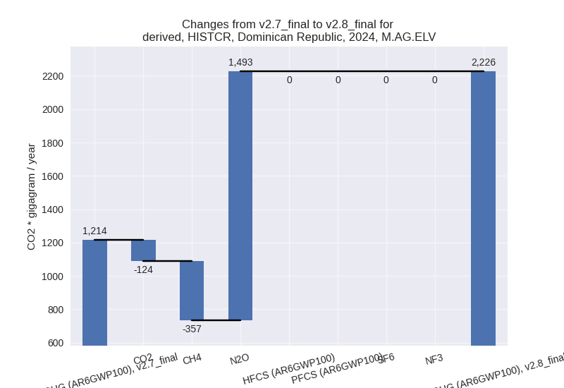
For 1990-2024 the changes per gas
are:
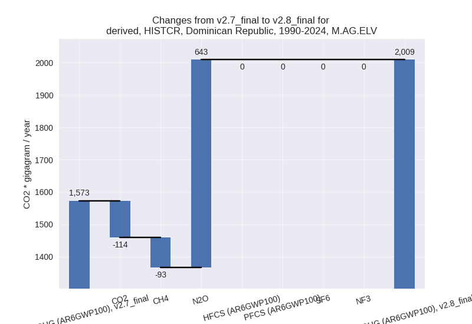
There is no subsector information available in PRIMAP-hist.
- 4: Total sectoral emissions in 2022 are 5132.94 Gg
CO2 / year which is 11.0% of M.0.EL emissions. 2024 Emissions have
changed by -43.3% (-4137.68 Gg CO2 /
year). 1990-2024 Emissions have changed by -32.8% (-1684.35 Gg CO2 / year). For 2024
the changes per gas
are:
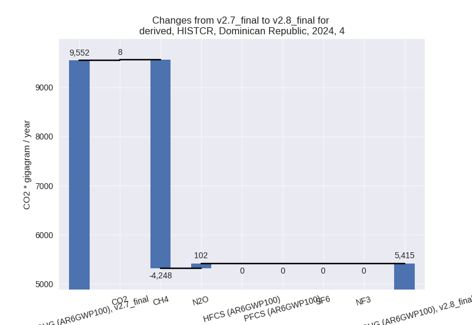
For 1990-2024 the changes per gas
are:
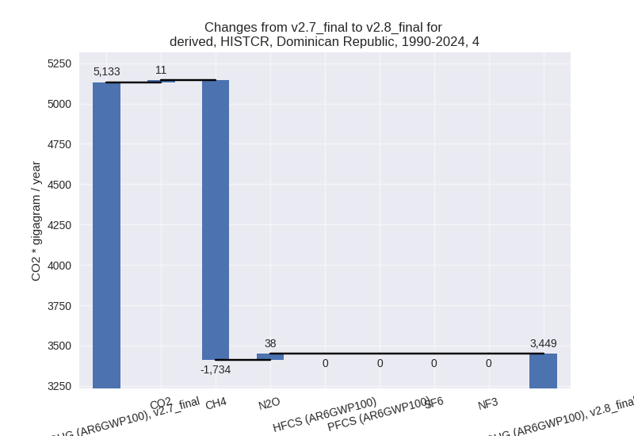
- 5: Total sectoral emissions in 2022 are 0.00 Gg CO2
/ year which is 0.0% of M.0.EL emissions. 2024 Emissions have changed by
-100.0% (-238.97 Gg CO2 / year).
1990-2024 Emissions have changed by -100.0% (-196.54 Gg CO2 / year). For 2024
the changes per gas
are:
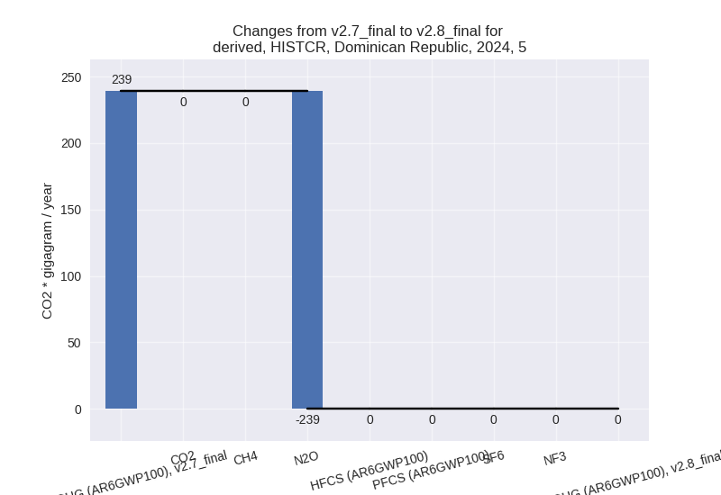
For 1990-2024 the changes per gas
are:
third party scenario (HISTTP):
Most important changes
per time frame
For 2024 the following sector-gas combinations have
the highest absolute impact on national total KyotoGHG (AR6GWP100)
emissions in 2024 (up to 20 with either at least 0.2%
impact on total emissions or at least 20% change):
- 1: 1.A, CO2 with 6150.76 Gg CO2 / year (26.5%), 13.9%)
- 2: 4, CH4 with 507.93 Gg CO2 / year (11.8%), 1.1%)
- 3: M.AG.ELV, N2O with -178.30 Gg CO2 / year (-6.0%), -0.4%)
- 4: M.AG.ELV, CH4 with -130.97 Gg CO2 / year (-8.3%), -0.3%)
- 5: 1.B.1, CH4 with 128.76 Gg CO2 / year (55.7%), 0.3%)
- 6: M.AG.ELV, CO2 with 53.50 Gg CO2 / year (29.2%), 0.1%)
- 7: 1.B.2, CH4 with 6.71 Gg CO2 / year (81.4%), 0.0%)
- 8: 1.B.1, N2O with 1.71 Gg CO2 / year (55.7%), 0.0%)
- 9: 1.B.2, N2O with 0.04 Gg CO2 / year (inf%), 0.0%)
For 1990-2024 the following sector-gas combinations
have the highest absolute impact on national total KyotoGHG (AR6GWP100)
emissions in 1990-2024 (up to 20 with either at least
0.1% impact on total emissions or at least 10% change):
- 1: 1.A, CO2 with 711.21 Gg CO2 / year (3.9%), 2.2%)
- 2: 4, CH4 with 63.64 Gg CO2 / year (2.5%), 0.2%)
- 3: 1.B.2, N2O with 0.01 Gg CO2 / year (inf%), 0.0%)
Changes in the main sectors for aggregate KyotoGHG (AR6GWP100)
are
- 1: Total sectoral emissions in 2022 are 29793.41 Gg
CO2 / year which is 60.2% of M.0.EL emissions. 2024 Emissions have
changed by 26.1% (6300.45 Gg CO2 /
year). 1990-2024 Emissions have changed by 3.8% (722.71 Gg CO2 / year). For 2024 the
changes per gas
are:
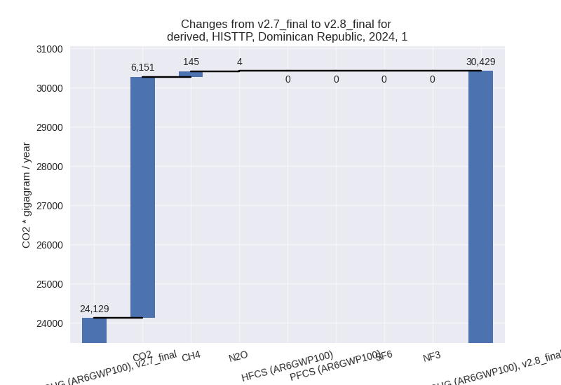
For 1990-2024 the changes per gas
are:
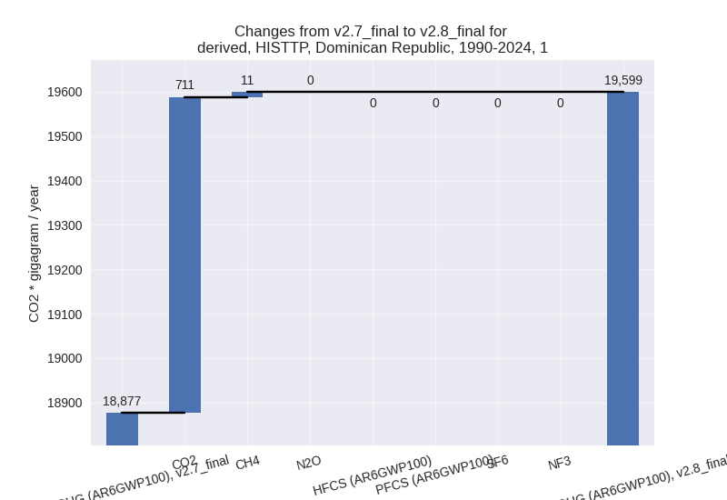
The changes come from the following subsectors:
- 1.A: Total sectoral emissions in 2022 are 29223.09
Gg CO2 / year which is 98.1% of category 1 emissions. 2024 Emissions
have changed by 26.1% (6163.42 Gg
CO2 / year). 1990-2024 Emissions have changed by 3.8% (712.23 Gg CO2 / year). For 2024 the
changes per gas
are:
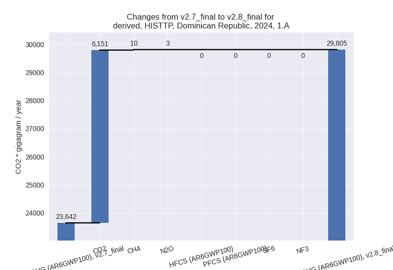
For 1990-2024 the changes per gas
are:
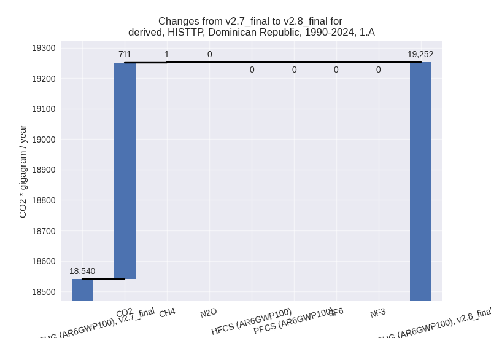
There is no subsector information available in PRIMAP-hist.
- 1.B.1: Total sectoral emissions in 2022 are 364.78
Gg CO2 / year which is 1.2% of category 1 emissions. 2024 Emissions have
changed by 55.7% (130.47 Gg CO2 /
year). 1990-2024 Emissions have changed by 3.7% (10.10 Gg CO2 / year). For 2024 the
changes per gas
are:
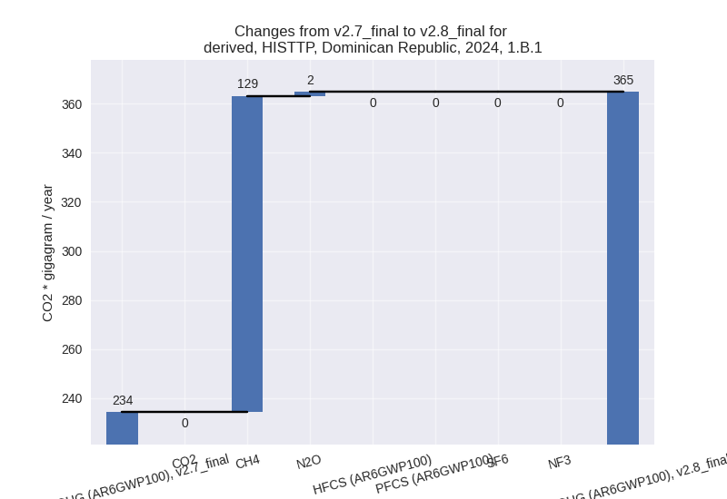
For 1990-2024 the changes per gas
are:
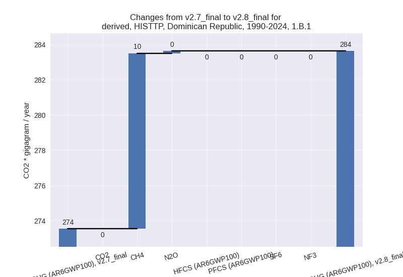
There is no subsector information available in PRIMAP-hist.
- 1.B.2: Total sectoral emissions in 2022 are 205.54
Gg CO2 / year which is 0.7% of category 1 emissions. 2024 Emissions have
changed by 2.6% (6.55 Gg CO2 /
year). 1990-2024 Emissions have changed by 0.6% (0.38 Gg CO2 / year). For 2024 the
changes per gas
are:
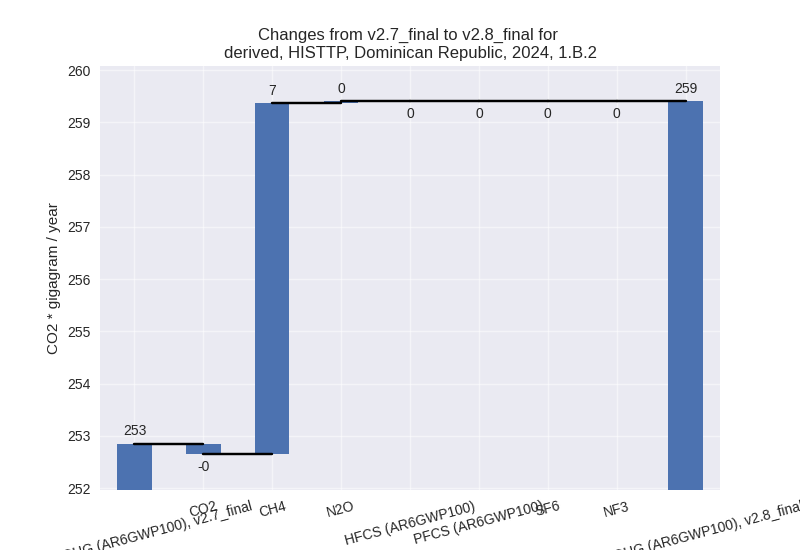
There is no subsector information available in PRIMAP-hist.
- 2: Total sectoral emissions in 2022 are 4498.85 Gg
CO2 / year which is 9.1% of M.0.EL emissions. 2024 Emissions have
changed by 0.2% (9.71 Gg CO2 /
year). 1990-2024 Emissions have changed by 0.3% (5.71 Gg CO2 / year).
- M.AG: Total sectoral emissions in 2022 are 10258.62
Gg CO2 / year which is 20.7% of M.0.EL emissions. 2024 Emissions have
changed by -2.7% (-283.98 Gg CO2 /
year). 1990-2024 Emissions have changed by -0.3% (-23.79 Gg CO2 / year). For 2024 the
changes per gas
are:
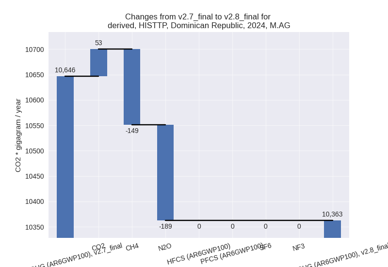
The changes come from the following subsectors:
- 3.A: Total sectoral emissions in 2022 are 5868.36
Gg CO2 / year which is 57.2% of category M.AG emissions. 2024 Emissions
have changed by -0.5% (-28.20 Gg CO2
/ year). 1990-2024 Emissions have changed by -0.0% (-2.03 Gg CO2 / year).
- M.AG.ELV: Total sectoral emissions in 2022 are
4390.26 Gg CO2 / year which is 42.8% of category M.AG emissions. 2024
Emissions have changed by -5.4%
(-255.78 Gg CO2 / year). 1990-2024 Emissions have changed by -0.6% (-21.77 Gg CO2 / year). For 2024 the
changes per gas
are:
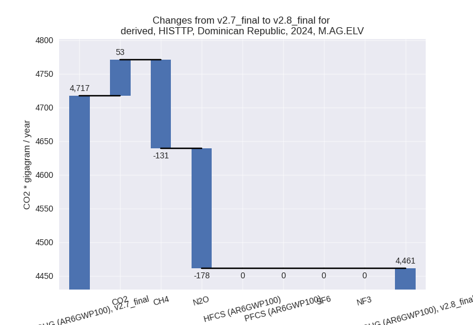
There is no subsector information available in PRIMAP-hist.
- 4: Total sectoral emissions in 2022 are 4719.68 Gg
CO2 / year which is 9.5% of M.0.EL emissions. 2024 Emissions have
changed by 12.1% (535.65 Gg CO2 /
year). 1990-2024 Emissions have changed by 2.6% (71.08 Gg CO2 / year). For 2024 the
changes per gas
are:
For 1990-2024 the changes per gas
are:
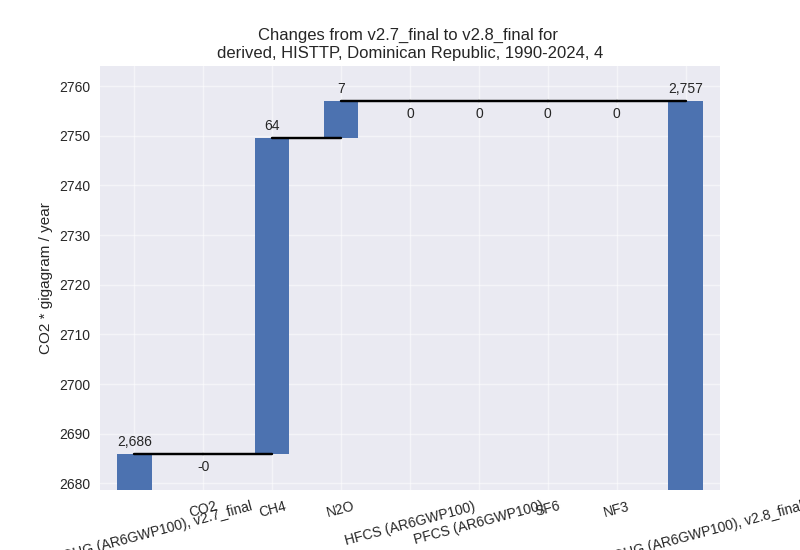
- 5: Total sectoral emissions in 2022 are 254.06 Gg
CO2 / year which is 0.5% of M.0.EL emissions. 2024 Emissions have
changed by 11.4% (27.24 Gg CO2 /
year). 1990-2024 Emissions have changed by 0.9% (1.72 Gg CO2 / year). For 2024 the
changes per gas
are:
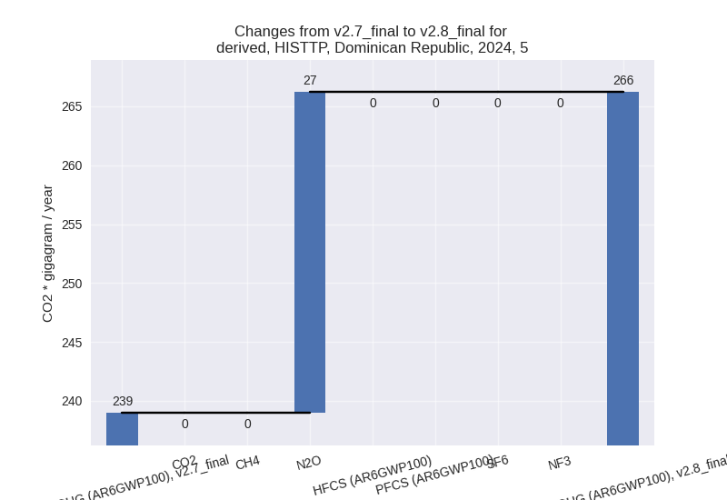